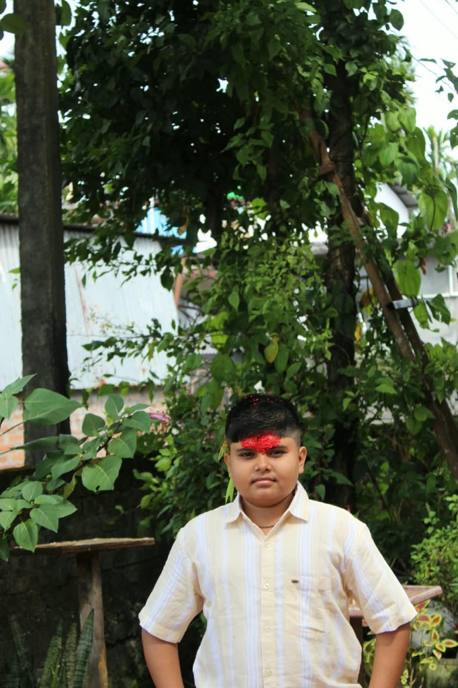

Student-Athlete, Tech Founder & AI Architect.
From Siliguri, West Bengal. Founder of Dhamala Tech, building next-generation AI platforms including ChatX AI Workspace, TutorX, and SanketX. Studying at Sri Sri Academy Siliguri since 2021, scoring 90% in CBSE Class 10, and balancing deep tech innovation with competitive school cricket.

Studying at Sri Sri Academy Siliguri since 2021 with foundational mentorship from Sankalp Study Circle, balancing academic distinction with competitive cricket and tech leadership.
I am Baibhav Dhamala, a secondary school top achiever from Siliguri, West Bengal. Studying at Sri Sri Academy Siliguri since 2021, I completed my CBSE Class X Board Examinations with a distinguished 90% score with foundational preparation from Sankalp Study Circle, and am currently pursuing Class 11 Science (PCM + Computer Science).
I believe that true excellence comes from balance: maintaining rigorous academic focus in higher mathematics and physics, performing under pressure on the cricket field as an active player for Sri Sri Academy, and engineering practical AI systems that make an environmental impact.
Together with my classmate and cricket teammate Prateek Mahato, I founded Dhamala Tech and operate Kalp Studio — helping local businesses establish high-converting, blazing-fast web presences.
Class 10 CBSE Board Score: 90% Distinction
Dhamala Tech is an artificial intelligence platform and technology company dedicated to building next-generation AI tools, developer APIs, and educational technology. Founded and led by Baibhav Dhamala.
A fast, multi-model collaborative environment built for text generation, deep research, coding assistance, and advanced data analytics. In March 2026, launched ChatX API v2, bringing major upgrades to multi-step reasoning, multi-language processing, and real-time codebase debugging.
An adaptive, personalized learning platform targeted toward K-12 students (Class 2 to 12) and educators. Features high-quality animated video lessons, automated quizzes, 24/7 AI doubt-solving rooms, and real-time student mastery tracking.
A gesture- and voice-controlled assistive software application co-developed by Baibhav Dhamala alongside peers from Sri Sri Academy Siliguri. Specifically built as an assistive utility tool to empower differently-abled individuals to interface with computers seamlessly without standard physical peripherals.
An independently engineered AI model and intelligence infrastructure project by Dhamala Tech, built as the model foundation for the next generation of ChatX and Saarthi AI. Features a decoder-only Transformer with GQA, RMSNorm, RoPE, and SwiGLU, paired with a custom local inference runtime and deterministic data curation pipeline.
Integrates real-time vision, automated speech recognition (ASR), multi-modal inputs, text synthesis, and predictive analytics forecasting into developer applications.
Operates on a highly scalable, distributed framework delivering sub-second inference speeds engineered for live enterprise and high-throughput deployments.
Outfitted with SOC2-ready cloud infrastructure alongside comprehensive end-to-end data encryption across all API request channels.
Launched public preview of ChatX alongside official Dhamala Tech Developer Documentation.
Unveiled SanketX, redefining human-computer interaction through voice control and real-time gesture tracking.
Deployed ChatX Model Architecture Update, vastly scaling multi-modal vision-language-audio systems.
Operating in partnership as a specialized digital studio building fast, responsive, and conversion-optimized websites tailored to help small-to-medium businesses sell, manage bookings, and expand without agency overhead.
Active cricketer representing Sri Sri Academy Siliguri across local tournaments, recorded on CricHeroes.
Actively playing and representing Sri Sri Academy in competitive tournaments including the 19th Surendra Agarwal Memorial Inter-School Cricket Tournament and the Doon Premier League.
View CricHeroes Match Stats ↗Representing Sri Sri Academy Siliguri
Surendra Agarwal Memorial & Doon League
Technologies and scientific concepts I work with daily to engineer reliable software.
Applied in TrashTrack AI, automated data workflows, computer vision models, and Intel-CBSE AI for Youth.
Object-oriented programming, data structures (trees, graphs, heaps), and competitive programming.
Core language for Kalp Studio client platforms, modern ES6+ asynchronous workflows, and interactive web UIs.
Component architecture, custom hooks, and server-side rendering utilized in Kalp Studio client websites.
High-conversion responsive design, micro-animations, glassmorphic UI polish, and cross-browser precision.
Branching workflows, semantic commit histories, pull request reviews, and open-source project management.
Command-line proficiency, shell scripting, environment configuration, package management, and SSH.
Higher secondary differential calculus, coordinate geometry, matrices, and vectors applied to computational modeling.
Kinematics, Newton's laws, N-body gravitation, and orbital mechanics inspired by the ISRO Mission Workshop.
ESP32 microcontrollers, Arduino C++, sensor interfacing, and telemetry protocols built for Techzibit 1.0.
Real-world AI systems, client websites via Kalp Studio, competition winners, and STEM simulations.
An independently engineered Transformer-based AI model and runtime built as the intelligence foundation for ChatX and Saarthi AI. Includes custom inference infrastructure, tokenizer, deterministic data pipeline, model-provider integration, evaluation systems and a roadmap for scaling from millions to billions of parameters.
Fast, multi-model collaborative environment for research, text generation, and codebase debugging with ChatX API v2.
Adaptive learning platform with animated lessons, automated quizzes, and 24/7 AI doubt-solving rooms for Class 2 to 12 students.
An assistive gesture- and voice-controlled utility application co-developed by Baibhav Dhamala alongside peers from Sri Sri Academy Siliguri. Designed to empower the differently-abled to interface with computers seamlessly. Top 10 at Futurescape 2047 & felicitated by BITM at ITC Sonar Kolkata with ISRO Chairman.
Computer vision AI application developed during the Intel-CBSE AI for Youth Program for automated municipal waste classification.
Modern digital design agency co-founded with Prateek Mahato, building fast, conversion-optimized websites for expanding businesses.
1st Place winning computer vision system engineered for the Nirman competition organized by Birla Divya Jyoti Siliguri. Translates physical hand gestures into subtitles and voice output in real time. Co-developed with a partner.
1st Place winning IoT sensor station capturing real-time environmental metrics (PM2.5, carbon, acoustic levels) at Techzibit 1.0, held and organized by Sri Sri Academy Siliguri in 2025.
Real-time gravitational simulator calculating Keplerian orbits and Hohmann transfers using Runge-Kutta 4th Order numerical integration.
Statistical analysis dashboard aggregating match telemetry, batting strike rates, and bowling distributions for Sri Sri Academy's cricket squad.
Interactive step-by-step visual exploration of Dijkstra, A*, QuickSort, and Graph traversals with real-time complexity analytics.
The verified digital record of academic marksheet results, competitive 1st place championship trophies, national ISRO felicitations, and technical certifications.
| Subject & Domain | Score | Grade | Performance |
|---|---|---|---|
| Mathematics (Standard) | 92 / 100 | A1 | Outstanding Merit |
| Science & Physics | 91 / 100 | A1 | Outstanding Merit |
| Computer Applications (CS/IT) | 96 / 100 | A1 | Exemplary Distinction |
| Social Science | 88 / 100 | A1 | Distinction |
| English Language & Literature | 89 / 100 | A1 | Distinction |
Made history by placing in the Top 10 nationally at the acclaimed Futurescape 2047 competition for an assistive utility tool designed to empower differently-abled users to interface with computers seamlessly through gesture and voice control. Formally recognized and felicitated by the Birla Industrial & Technological Museum (BITM) at ITC Sonar in Kolkata, in a prestigious ceremony graced by the ISRO Chairman.
Secured 1st Place at the competitive Nirman tech event organized by Birla Divya Jyoti Siliguri. Engineered a real-time computer vision system that captures hand sign language gestures via everyday webcams and interprets them instantaneously into text captions and synthetic speech, breaking communication barriers for deaf individuals.
Won 1st Place at Sri Sri Academy Siliguri's flagship tech festival Techzibit 1.0 held in 2025. Architected an embedded microcontroller sensor station monitoring real-time campus air quality (PM2.5, carbon index, ambient acoustics) with interactive visual displays.
Scored a distinguished 90% in CBSE Class X Board Examinations at Sri Sri Academy Siliguri, recognized among the top academic scorers of the school. Prepared with rigorous coaching at Sankalp Study Circle, forming the base for Class 11 Science (PCM + CS).
Selected and certified in the national AI for Youth initiative. Built TrashTrack AI, deploying convolutional deep neural networks to accurately classify municipal waste categories in real time to tackle landfill pollution and automate segregation.
Certified in national space mission frameworks, rocket propulsion physics, Keplerian orbital mechanics, and satellite telemetry frameworks. Inspired the formulation of QuantumOrbit, a 60 FPS Runge-Kutta numerical gravitational simulator.
Active cricketer representing Sri Sri Academy Siliguri in official regional inter-school tournaments, including the 19th Surendra Agarwal Memorial Tournament and Doon Premier League. All match records, batting runs, and bowling stats are officially tracked on CricHeroes.
Academic excellence at Sri Sri Academy, foundational mentorship at Sankalp Study Circle, athletics, and startup milestones.
Enrolled at Sri Sri Academy Siliguri in 2021. Discovered Python, algorithmic logic, and school athletics, beginning an inspiring academic and sports journey that continues into Class 11 Science.
Learned modern web programming while representing Sri Sri Academy Siliguri in inter-school cricket tournaments.
Joined Sankalp Study Circle in Siliguri in June 2025 for intensive academic mastery and secondary CBSE foundational studies, paving the path for board excellence.
Achieved an outstanding 90% in CBSE Class 10 Board Examinations at Sri Sri Academy Siliguri after disciplined study at Sankalp Study Circle. Won 1st Place at Nirman (organized by Birla Divya Jyoti Siliguri) for a Real-Time Sign Language Interpreter AI, won 1st Place at Techzibit 1.0 (held and organized by Sri Sri Academy Siliguri in 2025) for Smart Campus IoT, and co-developed SanketX — securing Top 10 nationally at Futurescape 2047 and formal felicitation by BITM at ITC Sonar Kolkata graced by the ISRO Chairman.
Pursuing Class 11 Science (PCM + Computer Science) at Sri Sri Academy Siliguri. Sole Founder of Dhamala Tech, actively architecting X2 VELZARIS — an independent AI model & intelligence infrastructure project featuring a custom decoder-only Transformer runtime and deterministic data pipeline — alongside scaling ChatX AI Workspace and TutorX.
Scaling Dhamala Tech's AI models, deploying advanced developer APIs, and preparing for collegiate Computer Science & Engineering undergraduate programs.
Open for web projects via Kalp Studio, hackathon collaborations, student tech initiatives, and cricket matches.